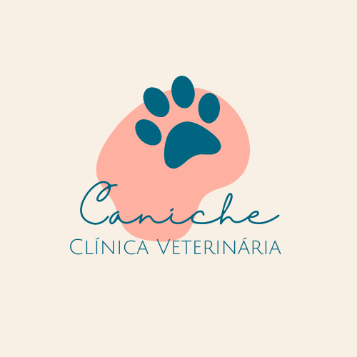

AMOR E DEDICAÇÃO PARA SEU MELHOR AMIGO
 (21)2000-0000
(21)2000-0000
(21)90000-0000
 emailfictício@ficticio.com.br
emailfictício@ficticio.com.br
 Rua Fictícia, 54 - Centro - RJ
Rua Fictícia, 54 - Centro - RJ
Caniche Clínica Veterinária
Amor e dedicação para seu melhor amigo!

Saiba como Chegar